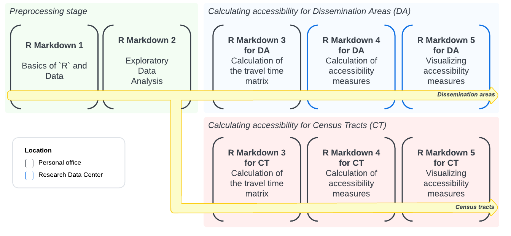
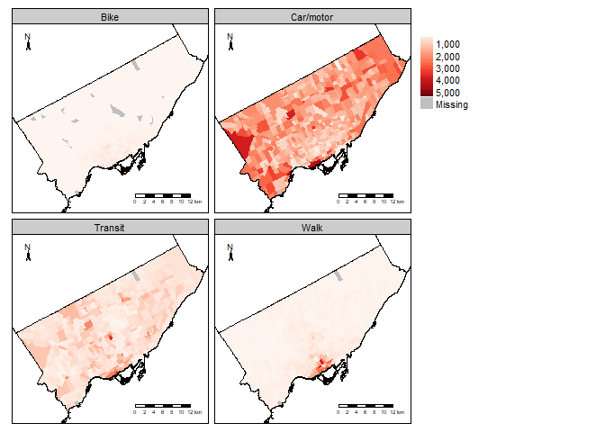
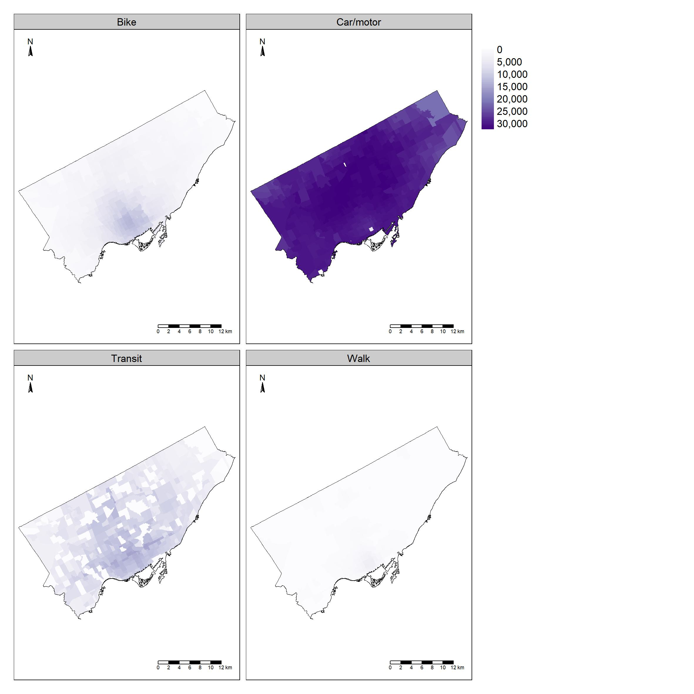
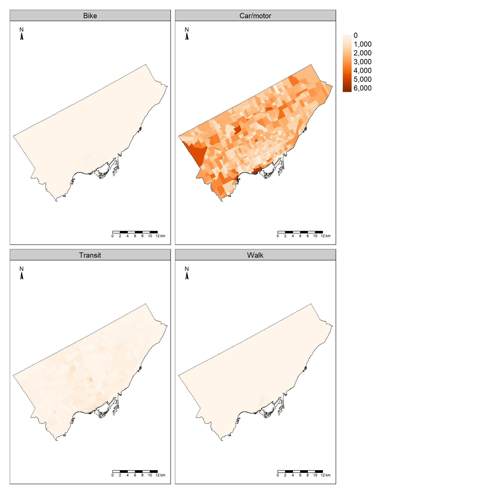

The CommuteCA R package was created to develop standardized methods for transport analysis in research, particularly for analysis using the 2021 Census of Population from Statistics Canada. We focused our efforts on the Commuting Reference Guide, which provides valuable variables and information on commuting for the Canadian population aged 15 and older living in private households.
The name of the package, CommuteCA, references the commuting section of the 2021 Canadian Census of Population. This package was created in conjunction with the office of the Research Data Center at McMaster University, the Sherman Centre for Digital Scholarship and the Mobilizing Justice.
The Mobilizing Justice project is a multidisciplinary and multi-sector collaboration with the objective of understand and address transportation poverty in Canada and to improve the well-being of Canadians at risk of transport poverty. The Social Sciences and Humanities Research Council (SSRHC) has provided funding for the project, which was created by an unprecedented alliance of academics from various Canadian provinces and institutions, transportation firms, and nonprofit organizations.
Structure
CommuteCA consists of a series of R datasets and R Markdown files created to calculate job accessibility analyses for any city in Canada using the 2021 Census of Population as the primary data source. The source data (the demographic census) is restricted and requires controlled access, meaning it must be processed within a Research Data Center (RDC) office. The package includes datasets and R Markdown files that enable accessibility analysis for two spatial units:
- Dissemination Areas, a Statistics Canada spatial unit available nationwide.
- Census Tracts, available only for Census Metropolitan Areas and Census Agglomerations.
For Census Tracts, the package provides datasets and R Markdown files that allow researchers and transport practitioners to generate job accessibility measures and maps without needing to visit an RDC office.
For Dissemination Areas, we developed R Markdown files that split the process of calculating and analyzing accessibility metrics into distinct steps. This structure simplifies data processing, given the restricted nature of the source data.
Explanation of the R markdown files
The figure below shows the order in which the R Markdown files are executed. For the Dissemination Area spatial unit, only the fourth and fifth steps - “Calculation of accessibility measures” and “Visualizing accessibility measures” - must be executed within an RDC office when working with original data from the Census of Population. To make the methodology easier to understand, we provide a test dataset derived from the demographic census, containing a selection of variables. This allows researchers to test and refine the methodology before processing the original data in an RDC office.

The R Markdown files are available in the /data-raw folder if you clone the repository from GitHub. If you have installed the package, you can access the R Markdown templates in RStudio by navigating to File > New File > R Markdown... > From Template and selecting one of the CommuteCA R Markdown templates.
Basics of R and Data
This R markdown provides a brief introduction to the R language and data concepts. It also talks about the principles of literate programming, data objects and basic operations, ways of measuring things and data manipulation.
Exploratory Data Analysis
This R markdown aims to provide a brief introduction to exploratory data analysis (EDA). It also deals with descriptive statistics and visualization techniques.
Travel Times
These R markdown files calculate a travel time matrix for multimodal transport networks (walking, cycling, public transit and motorized vehicles), for a selection of dissemination areas (DA) or census tract (CT) using the {r5r} R package.
Accessibility measures
Considering the number of workers and employment opportunities obtained from the 2021 Census of Population, this R markdown enables obtaining Hansen-type accessibility (Hansen, 1959) and spatial availability (Soukov and Paez,2023), for all Canadian provinces and territories, considering different modes of transportation. For Dissemination Areas (DA), researchers must access the original data within an RDC office. For Census Tracts (CT), the package provides pre-processed datasets, allowing users to generate accessibility measures without visiting an RDC office.
Data sets
The package contains a series of datasets for accessibility analysis and other transportation studies.
The datasets include calibrated impedance functions for job destinations across walking, cycling, public transit, and motorized vehicle modes. These functions are provided at three geographic levels: city, Census Metropolitan Areas (CMA) and Census Agglomerations (CA) and Province and Territories.
For provinces, the calibrated job impedance functions are split by urbanity level or Indigenous Territory affiliation.
library('dplyr')
#>
#> Attaching package: 'dplyr'
#> The following objects are masked from 'package:stats':
#>
#> filter, lag
#> The following objects are masked from 'package:base':
#>
#> intersect, setdiff, setequal, union
data("pr_impedance_functions") # Load provincial impedance functions
pr_impedance_functions %>%
filter(Pr == 'Alberta') %>% # Filter for Alberta
select(Pr, CMA_type, PwMode, distribution, est_1, est_2) # Display key columns
#> Pr CMA_type PwMode distribution
#> 1 Alberta CMA/CA Car/motor lnorm
#> 2 Alberta CMA/CA Transit gamma
#> 3 Alberta CMA/CA Walk exp
#> 4 Alberta CMA/CA Bike gamma
#> 5 Alberta Moderate metropolitan influenced zone Car/motor lnorm
#> 6 Alberta Moderate metropolitan influenced zone Walk lnorm
#> 7 Alberta Moderate metropolitan influenced zone Transit gamma
#> 8 Alberta Moderate metropolitan influenced zone Bike lnorm
#> 9 Alberta Weak metropolitan influenced zone Car/motor lnorm
#> 10 Alberta Weak metropolitan influenced zone Walk lnorm
#> 11 Alberta Weak metropolitan influenced zone Bike lnorm
#> 12 Alberta Weak metropolitan influenced zone Transit gamma
#> 13 Alberta Strong metropolitan influenced zone Car/motor gamma
#> 14 Alberta Strong metropolitan influenced zone Walk lnorm
#> 15 Alberta Strong metropolitan influenced zone Bike unif
#> 16 Alberta Strong metropolitan influenced zone Transit exp
#> 17 Alberta No metropolitan influenced zone Car/motor exp
#> 18 Alberta No metropolitan influenced zone Walk lnorm
#> 19 Alberta No metropolitan influenced zone Transit gamma
#> est_1 est_2
#> 1 2.85460050 0.68852960
#> 2 2.89128944 0.06843334
#> 3 0.07527407 0.00000000
#> 4 2.27164673 0.10593182
#> 5 2.77916345 0.86349605
#> 6 1.60573174 1.05103395
#> 7 1.54061890 0.03805530
#> 8 2.07416320 0.79410686
#> 9 2.46235874 0.97471122
#> 10 1.81993182 0.96358833
#> 11 2.00735531 0.80808469
#> 12 1.24639321 0.02346271
#> 13 1.38546874 0.05002713
#> 14 1.05911762 1.28742159
#> 15 0.00000000 35.10561417
#> 16 0.02640051 0.00000000
#> 17 0.04703065 0.00000000
#> 18 1.38831321 0.79033268
#> 19 3.25054825 0.08020833The package also includes land use tables with labor force population and job counts for census tracts. The code below visualizes Toronto’s labour force distribution by transportation mode:
library("CommuteCA")
library("sf")
#> Linking to GEOS 3.11.2, GDAL 3.8.2, PROJ 9.3.1; sf_use_s2() is TRUE
library("tmap")
#> Breaking News: tmap 3.x is retiring. Please test v4, e.g. with
#> remotes::install_github('r-tmap/tmap')
data("census_tracts_ca21") # Census Tract Geometries
data("census_divisions_ca21") # Census Division geometries
data("land_use_CT_mode") # Land Use data with information of labour force and number of jobs considering transportation modes
census_tracts_ca21 <- census_tracts_ca21 %>%
filter(PCD == 3520) # Filtering data for the city of Toronto
land_use_CT_mode <- land_use_CT_mode %>%
filter(PCD == 3520) %>% # Filtering data for the city of Toronto
select(CTUID, PwMode, labour_force_est_rounded, jobs_rounded)
# Joining both data sets
Toronto <- expand.grid(CTUID = unique(census_tracts_ca21$CTUID),
PwMode = unique(land_use_CT_mode$PwMode)) %>%
left_join(land_use_CT_mode, by = c("CTUID" = "CTUID", "PwMode" = "PwMode")) %>%
left_join(census_tracts_ca21, by = "CTUID")
Toronto <- st_as_sf(Toronto, crs = st_crs(census_tracts_ca21)) # transforming the table in a spatial data type
# Creating the plot
total_pop_by_mode_CT <- tm_shape(Toronto) +
tm_polygons("labour_force_est_rounded",
style = "cont",
palette = "Reds",
title = " ",
border.col = NULL) +
tm_facets(by = "PwMode") +
tm_scale_bar(position = c("right", "bottom")) +
tm_compass(position = c("left", "top"), size = 1.0) +
tm_shape(census_divisions_ca21) +
tm_borders("black", lwd=0.5)
# Visualizing
total_pop_by_mode_CT
These datasets enable census tract-level accessibility analysis. For instance, the job accessibility for the city of Toronto (Hansen type):

Or the job spatial availability for the city of Toronto.

Installation
You can install the development version of CommuteCA from:
# install.packages("pak")
pak::pak("dias-bruno/commutecatest")